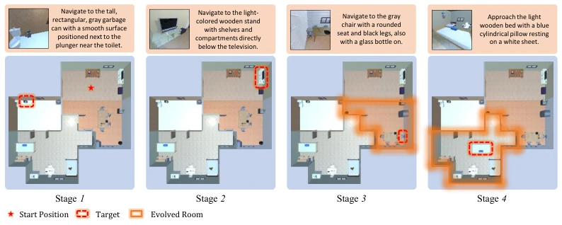
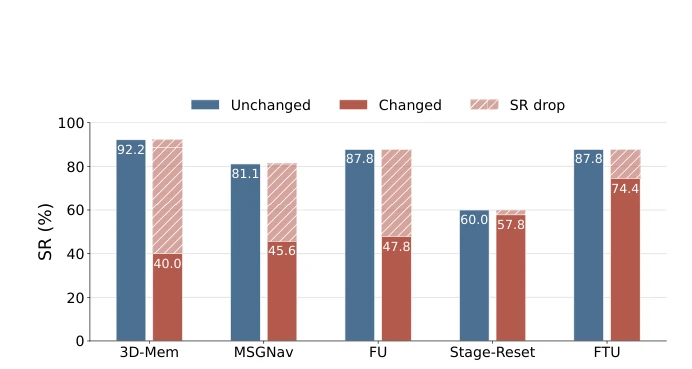
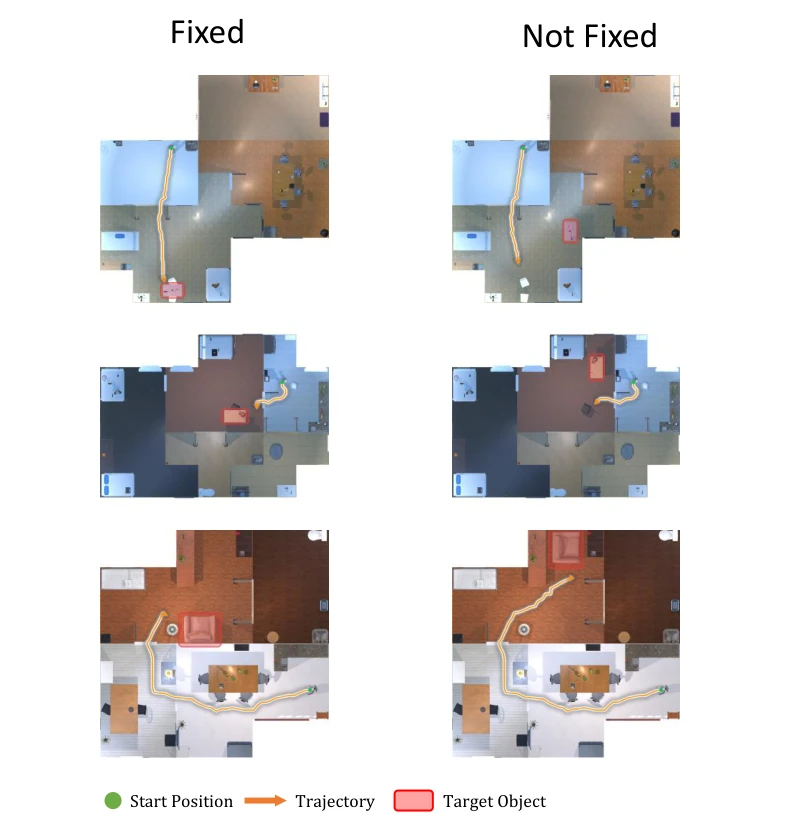

Figure 1: An illustration of lifelong navigation in an evolving environment. While navigating to the target object in stage k −1, the agent observes objects such as a TV, a sofa, a desk, and chairs, consolidating experience that can support future navigation. While the agent is in the bedroom, humans rearrange the living room. In this case, the agent should not blindly fuse new observations of the living room with prior experience. In such settings, prior observations can reduce redundant exploration, but they can also mislead later navigation when parts of the scene have evolved.
Figure 2: Scene evolution and goal sampling from stage k −1 to stage k in EvoNav-Bench. (1) Reference trajectory: during task generation, a reference trajectory is used to determine visited rooms and the transition room before stage k. (2) Room selection: a room is sampled using room assets, visited rooms, the transition room, and recent evolution history. (3) Room modification: one of three modification approaches is applied to the selected room. SALIENT OBJECT relocates a large object, such as the yellow desk in the figure, together with objects placed on it; RETAIN GROUP relocates all objects in the room while retaining asset groups, such as the desk and the white chair; and FULL SHUFFLE relocates all objects independently. (4) Goal sampling: after room modifica- tion, the target object

Figure 3: An Example task in EvoNav-Bench. This task occurs in a house with four rooms. The goal of each stage is described with an image and a short description consisting of category, adjacent objects, and appearance description. At stage 3, the bottom left room is modified with RETAIN GROUP method. At stage 4, the bottom left room is changed with SALIENT OBJECT method.
Figure 4: Environment-evolution statistics in EvoNav-Bench. Scene evolution occurs in 85.9% of episodes, with 48.4% containing two or more evolved stage transitions. Among stage-goal objects, 37.9% have been relocated before being assigned as targets. Across episodes, the relocated-object ratio spans from no relocation to over 80% of house objects, with median value within 10%-20%, showing that EvoNav-Bench covers both mild and substantial scene changes.

Figure 5: Retained object entries help in fixed scenes but can mislead navigation after scene evolution. Performance drops after scene evolution. FU outperforms Stage-Reset when the environ- ment evolution is disabled, but drops below Stage-Reset after scene evolution. MSGNav and FTU drops relatively less despite maintaining object entries. .

Figure 6: Qualitative FU rollouts in the Fixed/Not Fixed controlled analysis. Each row com- pares the Fixed condition (left) and the Not Fixed condition (right) for the same Stage-2 task. The two evaluations share the same Stage-1 reference trajectory and the same Stage-2 goal; following Sec. 4.3, this goal is sampled from objects observed along the shared reference trajectory.